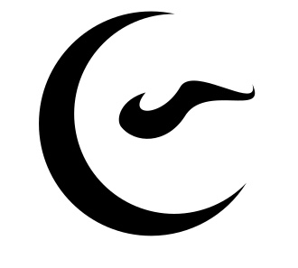

// DIE PARTIE STEHT AN
EXiL 126
Eine neue Party. Das Datum steht noch nicht — es kommt. Bis dahin hier die eine Seite, auf der später alles steht.
Wann
Datum folgt
Wo
Ort folgt
Wer
Liste folgt
// WAS BISHER PASSIERT
Es gibt noch nichts zu erzählen, ausser dass es eine Party wird. Diese Seite wächst mit: Datum, Ort, Gästeliste, dann die Playlist. Wer zuerst davon weiss, hat die beste Position.
// WER DAS ÜBERLEBT HAT
